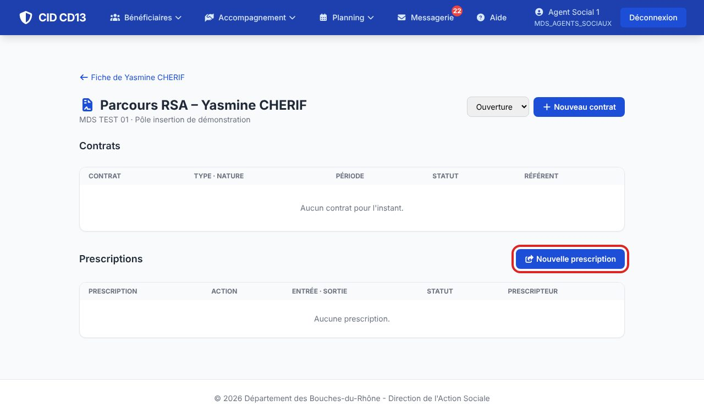
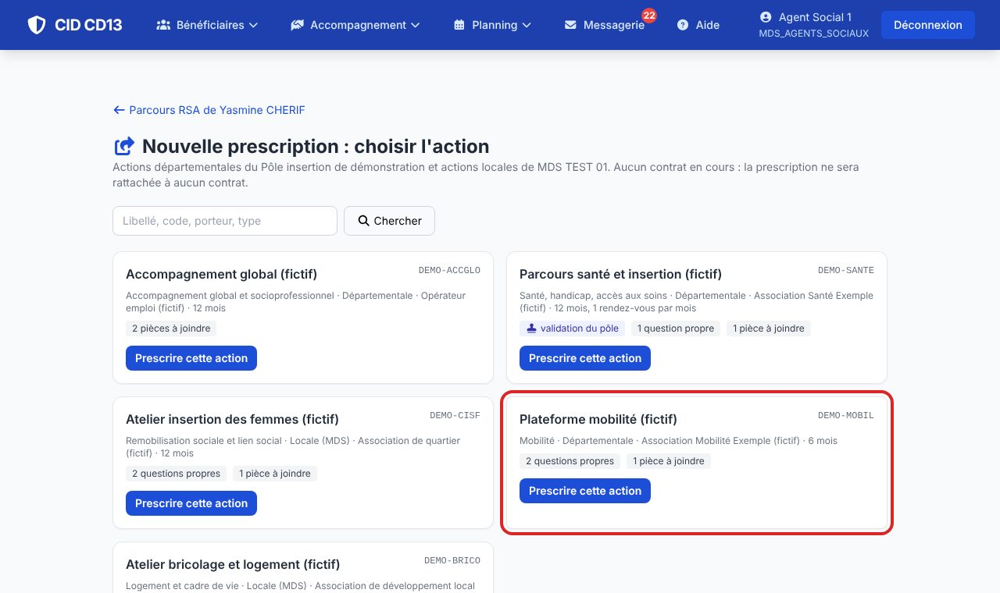
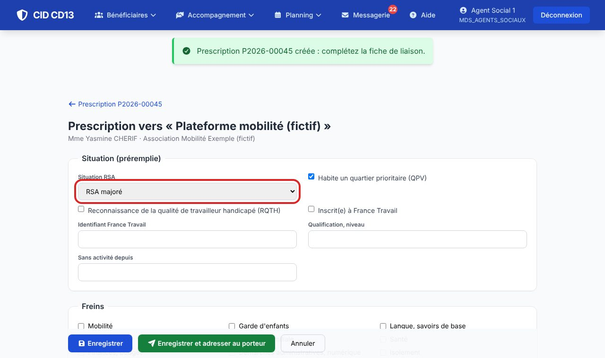
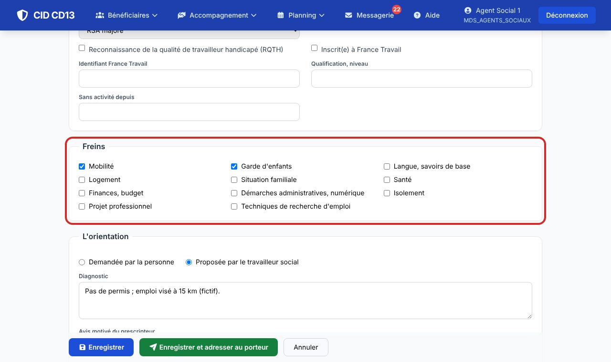
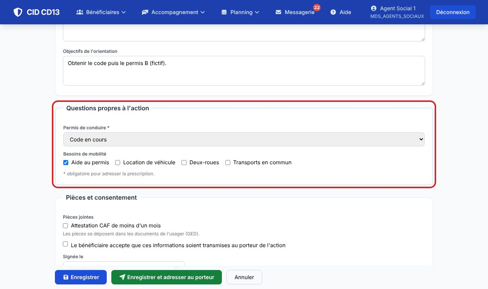
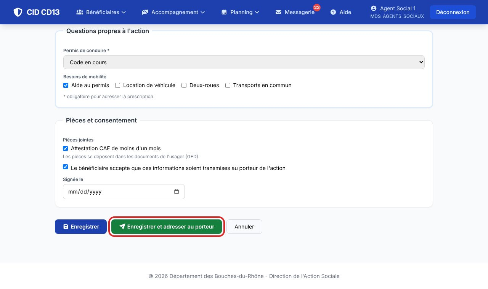
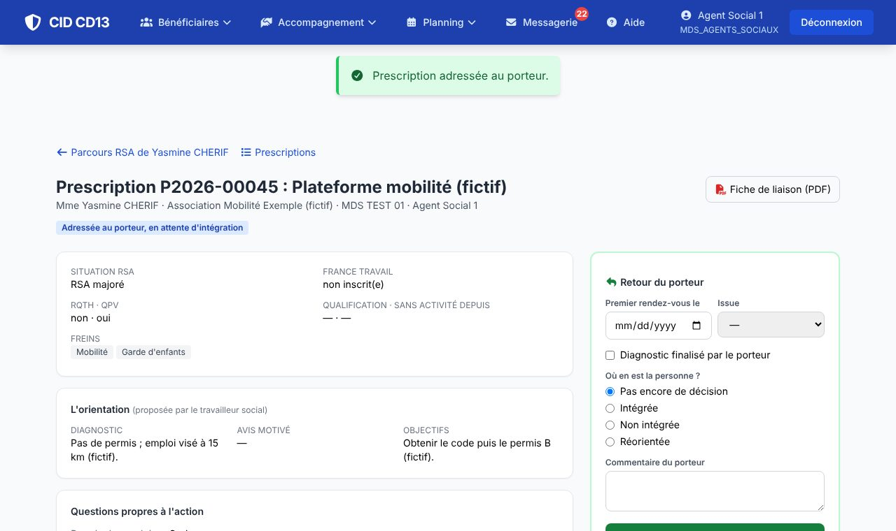

1Choisir l'action


- Dans le Parcours RSA du bénéficiaire, cliquez sur Nouvelle prescription.
- CID propose les actions départementales de votre pôle et les actions locales de votre MDS. Chaque carte indique si l'action passe par le pôle, ses questions propres et ses pièces à joindre.
- Cliquez sur Prescrire cette action.
2Compléter le tronc commun


- La situation est préremplie à partir du dossier et du contrat en cours : identifiant France Travail, qualification, objectifs.
- Cochez les freins (liste commune à toutes les MDS) et rédigez le diagnostic, l'avis motivé et les objectifs de l'orientation.
3Répondre aux questions de l'action

- Les questions marquées d'un astérisque sont obligatoires pour adresser la prescription.
- Une réponse à accès restreint (cadenas) n'est visible que de la MDS, du cadre et du médecin du pôle.
4Consentement et envoi


- Cochez les pièces fournies (déposées dans les documents de l'usager) et le consentement du bénéficiaire à la transmission.
- Enregistrer et adresser : au porteur directement, ou au pôle si l'action l'exige.
- La Fiche de liaison (PDF) s'imprime pour la signature et pour le porteur, avec un cadre « retour du porteur ».
Bon à savoir
- Sans consentement, la prescription ne part pas.
- Si un contrat est en cours, la prescription y est rattachée : la ligne de l'action s'ajoute toute seule au tableau des actions.
Et ensuite ?
Cliquez sur une image pour l'agrandir. Le cadre rouge montre où cliquer ou quoi remplir. Toutes les données affichées sont fictives.